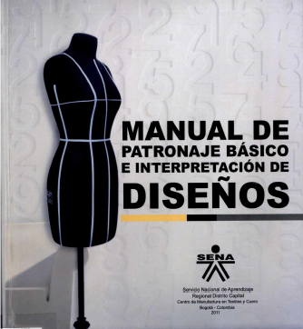

Manual de patronaje industrial SENA

La moda es inspiración, creatividad, sensibilidad pero también organización y planeación.
La materialización de los conceptos de moda resulta del conocimiento y maestría de diversos procesos técnicos encadenados, procesos específicos que establecen límites y en muchos casos oficios particulares que se constituyen en especialidades dentro del ciclo productivo de la moda.
El patronaje es uno de estos procesos de la cadena, es por excelencia el sistema organizacional en la creación de una prenda de vestir y la base para la búsqueda de soluciones a problemas comunes referentes al diseño y construcción de prendas de vestir. El conocimiento y desarrollo de sus técnicas contribuye de manera significativa a la obtención de los resultados esperados, es aquí donde se analiza el cuerpo humano, su constitución y tipología, la estructura de la prenda y sus posibilidades de construcción; adicionalmente posibilita el cálculo de materiales requeridos.
Dado que en nuestro contexto es poco el material de consulta disponible alrededor del Patronaje y/o el material disponible carece de vigencia y es además descontextualizado para las características fisionómicas de la población colombiana; esta obra es una aproximación a satisfacer esa necesidad ya que está centrado en la relación volumetría y arquitectura del cuerpo.